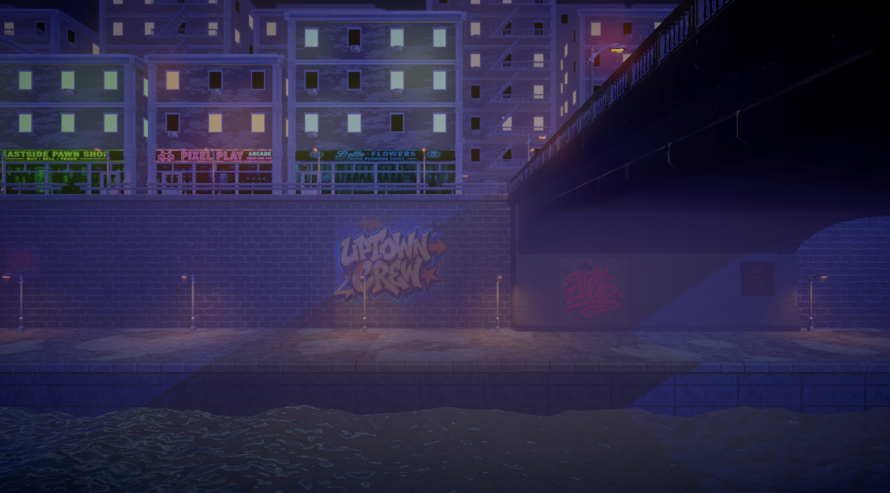
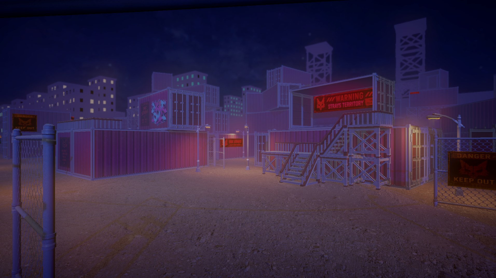
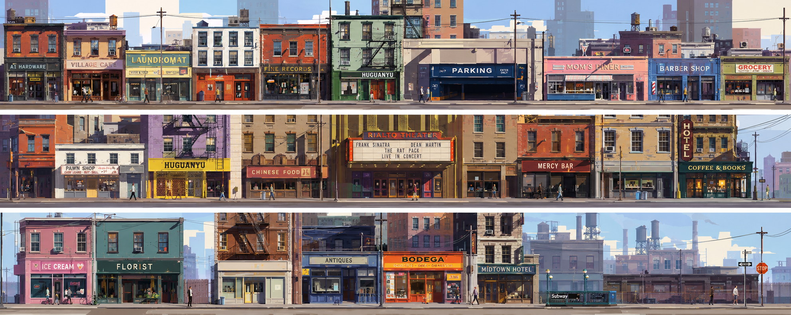
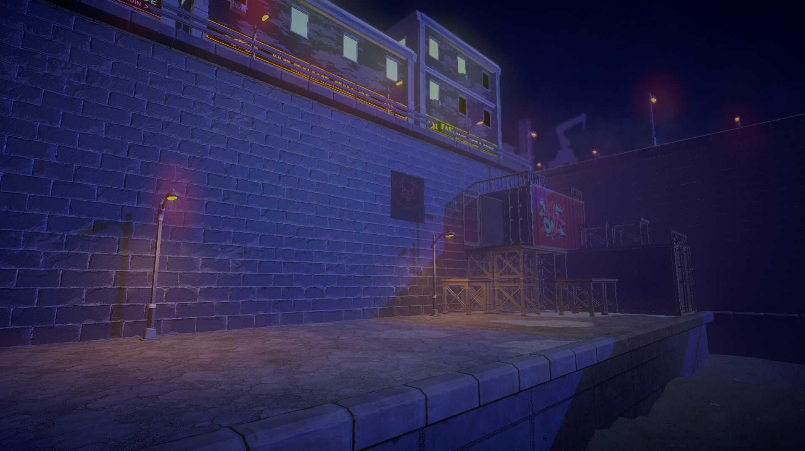
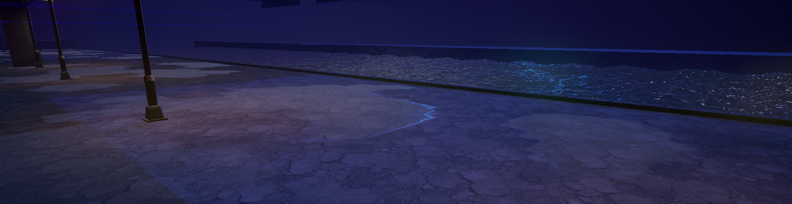

UnTruth
누구나 알고 있다고 믿는 동화와 정의, 기억을 뒤집는 이야기.
01 / 04
THE WORLD OF GRIMOIRE
그림 시티. 연방 수사국의 그림자 아래, 9개의 동화가 9개의 범죄구역이 된 도시.
여기서 정의는 기록되는 방식에 따라 전혀 다른 얼굴을 갖는다.
누구나 알고 있다고 믿는 동화와 정의, 기억을 뒤집는 이야기.
늘 비가 내리는, 국가가 관리하고 묵인하는 범죄도시.
진실을 비추면서 동시에 모든 것을 뒤집는, 도로시의 질문.
COLOUR LANGUAGE
보라는 직시, 빨강은 부정, 파랑은 도피, 초록은 죽음을 뜻한다. GRIMOIRE의 세계는 인물들의 선택을 색으로 먼저 말한다.
CHAPTER I · ROUGE DISTRICT
챕터 1은 그림 시티의 문을 여는 구간입니다. 비에 젖은 거리와 네온사인, 폐쇄된 골목 속에서 도로시는 ‘정의’라 믿어온 이야기의 균열을 처음 마주합니다.

비와 네온, 철문과 간판이 만든 수직적인 거리.
아름답지만 불온한 동화의 도시.
도로시가 마주하는 첫 번째 거울, 루주후드.



CHARACTER ARCHIVE
완성 일러스트와 디자인 언어를 중심으로, 챕터 1을 여는 두 인물을 전시합니다.
THE INVESTIGATOR
도로시
진실을 보려는 자. 그녀가 믿어온 정의는 정말 정의였을까. 보라색은 도로시가 끝내 마주해야 할 답을 암시한다.


THE RED HOOD
루주후드
상실을 부정하고 계승한 자. 붉은 망토는 유품이며, 그 선명한 색은 그녀가 버리지 못한 현실을 드러낸다.
MAKING THE CITY
컨셉에서 레벨, 네온 간판과 건물 모듈까지. GRIMOIRE의 챕터 1은 ‘동화의 외피를 쓴 범죄도시’라는 하나의 감각을 향해 쌓였습니다.




